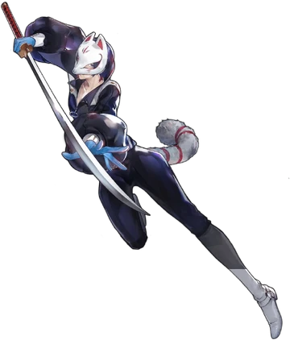

Introduction
Yusuke Kitagawa is the fifth unlockable character that you unlock in Persona 5 Royal. He is the first human character that does not go to Shujin Academy. Instead of going to Shujin Academy he goes to Kosei High School as an art student. He used to live with his sensei Madarame.
Persona Unlocking
When Ren, Ryuji, Ann, and Morgana were infiltrating Madarame’s museum in the metaverse Yusuke stumbles into the museum. This is where Yusuke learns the truth about Madarame and how he plagiarizes his students’ artwork to put into his exhibit. This then causes Yusuke to unleash his persona Goemon.
Gallery

Goemon
Fox(apperence in metaverse)
Yusuke Kitagawa
Facts about Yusuke Kitagawa
- Code Name: Fox
- DOB(date of birth): January 28, 1999
- Age: 17
- Height: 181 cm (5'11")
- Primary Tool: Japanese Swords
- Secondary Tool: Assault Rifle
- Arcana(personality): Emperor
- Persona(asssistant): Goemon